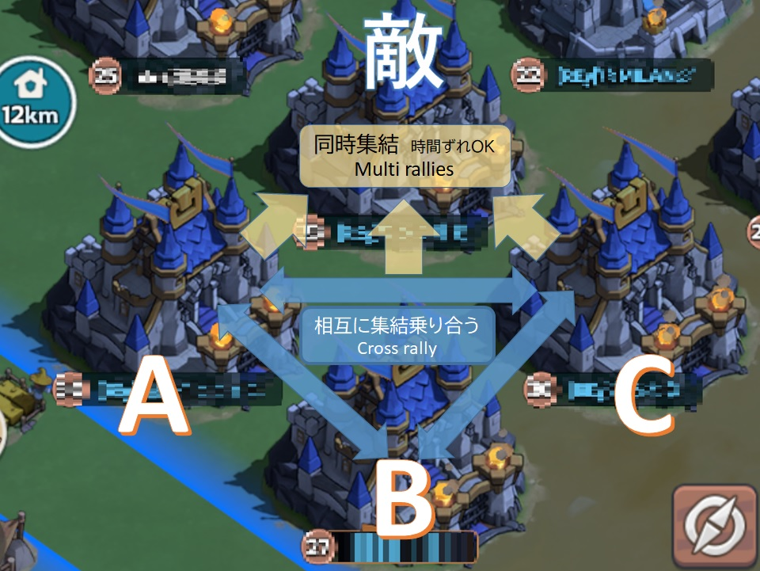

都市攻撃を行う目的
都市攻撃は主に下記のような状況で有効です。
- 強いプレイヤーが施設に駐屯している
- 駐屯人数が多く、施設奪還が難しい
- 邪魔な都市を排除したい
都市を飛ばすことで…
- 駐屯が解除される
- 施設の奪還が楽になる可能性がある
都市攻撃の基本ルール
-
都市攻撃は勝つ前提で行いたい
負けると兵士負傷が非常に多く、治療アイテムも大量消費になるため。 -
集結攻撃を多く活用する（単騎は避ける）
戦力を集中でき、勝率が上がる。 -
集結時間は1分が理想
敵に援軍を入れる準備時間を与えない。
立ち回り
- 味方はある程度固まって行動する
- 近くにいることで…
- 集結参加
- 援軍
- 都市攻撃 が素早くできる
集結チーム構成例

※画像タップで拡大可能です（スマホ標準機能等）
基本は3人1組チームで行動。
- 集結主＋集結参加者
- 現状の兵力からは3～4人集結が適正
要点まとめ
- 都市攻撃は施設奪還のために使う
- 必ず勝てる戦力で行う
- 単騎ではなく集結で攻める
- 1分集結で奇襲
- 3～4人チームで動く